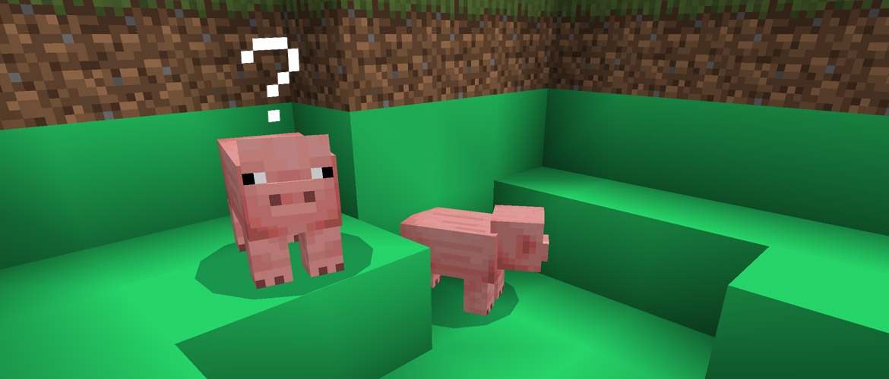
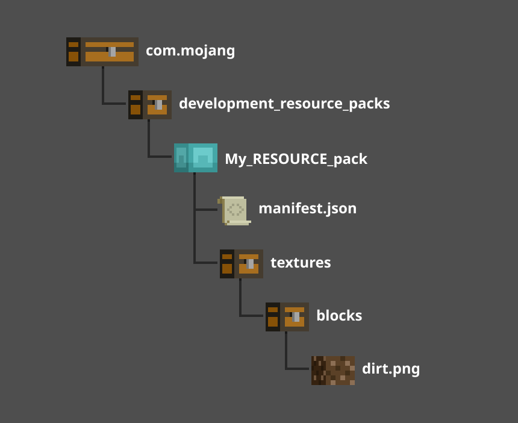
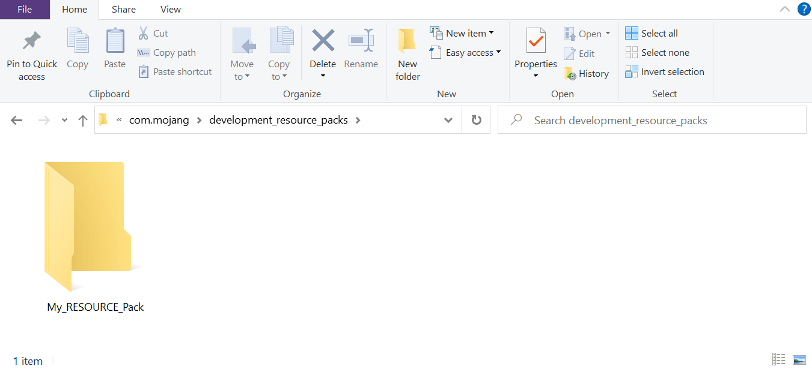
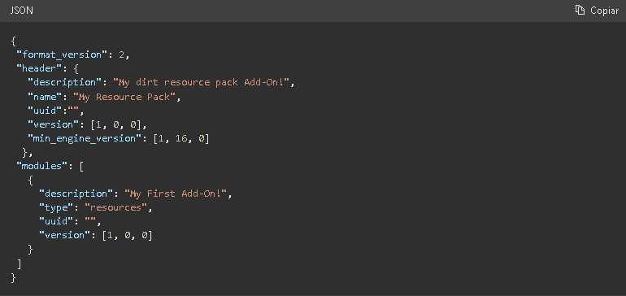
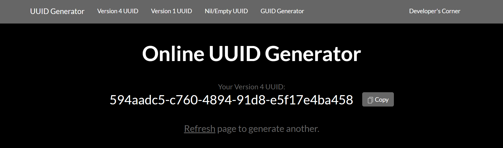

Antes de crear tu primer complemento para Minecraft: Bedrock Edition, deberás crear un pack para
guardar tu contenido personalizado. Hay dos tipos de packs que puede hacer un creador: los packs de
recursos y los packs de comportamiento.
Un pack de recursos es una estructura de carpetas que
contendrá todos tus modelos, sonidos, texturas y otros contenidos personalizados. En este tutorial,
aprenderás a cambiar el color de la tierra a un verde brillante. 
Cómo crear el pack de recursos
Para que Minecraft encuentre y use tus archivos de recursos, tienes que organizar las carpetas y los
archivos en una estructura particular. En este tutorial, aprenderás a crear esta estructura de
carpetas y archivos. 
Crea una carpeta
En esta sección, primero crearás una carpeta llamada My_RESOURCE_Pack.
Bueno, no tienes que
llamarla así. De hecho, puedes darle el nombre que quieras, pero las otras deben tener exactamente
el mismo nombre que figura en este tutorial para que Minecraft sepa dónde buscarlas.
Abre la carpeta com.mojang.
Haz doble clic en la carpeta development_resource_packs para abrirla.
Crea una carpeta nueva y llámala My_RESOURCE_Pack.
Haz doble clic en la carpeta
My_RESOURCE_Pack para abrirla. 
Crea un archivo de manifiesto
Para cargar un pack de recursos en Minecraft, deberás crear un archivo de manifiesto. El archivo de
manifiesto es un archivo JSON que contiene la siguiente información:
Descripción: es la descripción del juego sobre lo que hace el pack de recursos.
Nombre: El nombre del pack de recursos en el juego.
UUID: El identificador único universal.
Versión: La versión del pack de recursos.
Versión mínima del motor: es la versión de Minecraft necesaria para que funcione este pack.
Minecraft analizará la información del archivo de manifiesto y la mostrará en la sección
Complementos del juego. Dentro del archivo, la información se dividirá en dos secciones distintas:
encabezado y módulos. La sección de encabezado contendrá la información general del pack y la
sección de módulos contendrá la información de los packs dedicados.
Haz clic derecho en la ventana del Explorador y selecciona Nuevo > Documento de texto.
Llámalo manifest.json.
Deberás cambiar la extensión del archivo de .txt a .json. Si en la ventana del Explorador no se
muestra las Extensiones de nombre de archivo, puedes habilitarlas en la pestaña Ver. 
Haz doble clic en el archivo manifest.json para abrirlo en un editor de texto.
Copia y pega el siguiente código en tu archivo.

UUID
El identificador único universal, o UUID, es un número único que se usa para identificar diferentes
software. En Minecraft, el UUID se usa para definir un pack específico y evitar que cualquier
software duplicado cause problemas. Para el encabezado y los módulos, deberás ingresar dos números
de UUID diferentes en cada campo "uuid" entre las comillas. Puedes usar un generador de UUID online
como...
https://www.uuidgenerator.net/

Copia y pega un UUID en la sección de encabezado. Deberás pegar el UUID en el campo "uuid":"" entre
las comillas ("") para que se lea correctamente.
Actualiza la página web para generar un UUID nuevo que podrás usar en la sección de módulos.
Copia y pega el UUID nuevo en la sección de módulos, en el campo "uuid" entre las comillas.
Guarda el archivo manifest.json.
Cómo cambiar el bloque de tierra
Con el archivo de manifiesto completo, ahora puedes comenzar a agregar contenido personalizado a
Minecraft. Comencemos aplicando una textura nueva al bloque de tierra de la versión original. La
primera parte del proceso implica crear una estructura de carpetas para almacenar la textura.
En el Explorador de archivos, dentro de la carpeta My_RESOURCE_Pack, crea una carpeta y llámala
textures.
Haz doble clic en la carpeta textures para abrirla.
Dentro de la carpeta "textures", crea una carpeta y llámala blocks.
Haz doble clic en la carpeta blocks para abrirla.